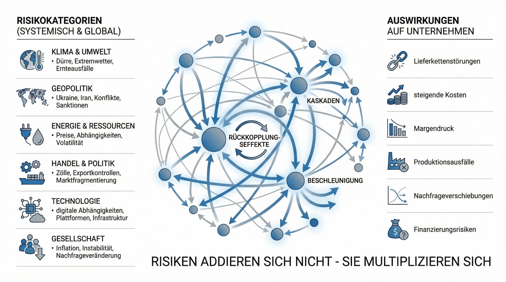
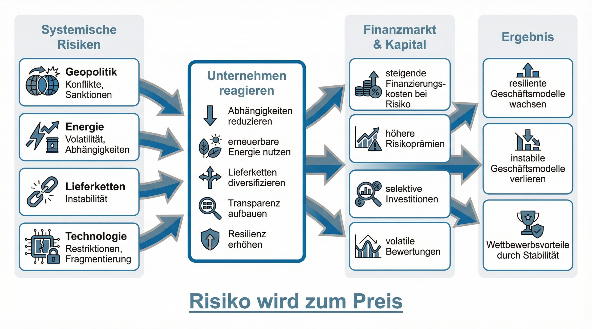
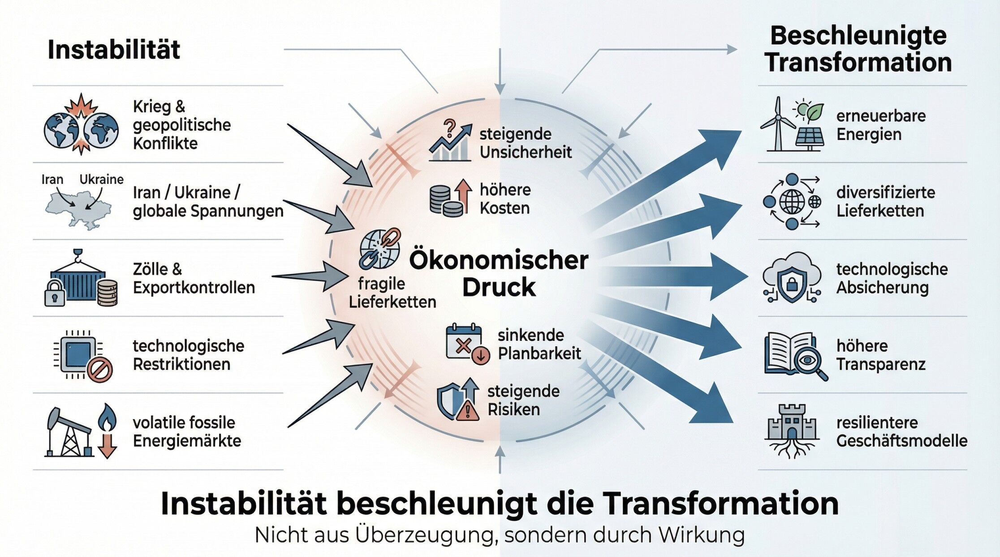
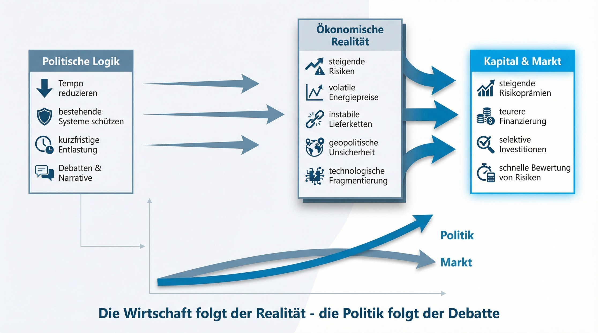
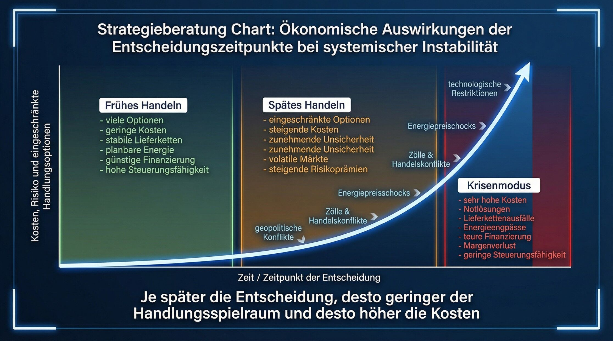
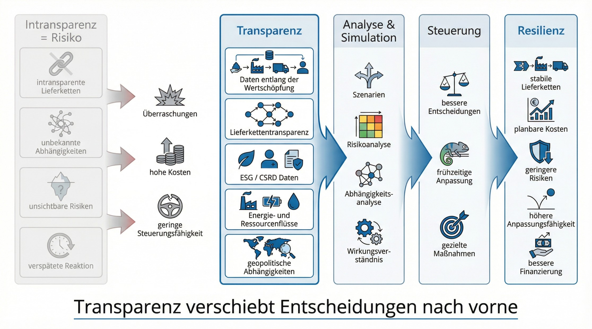
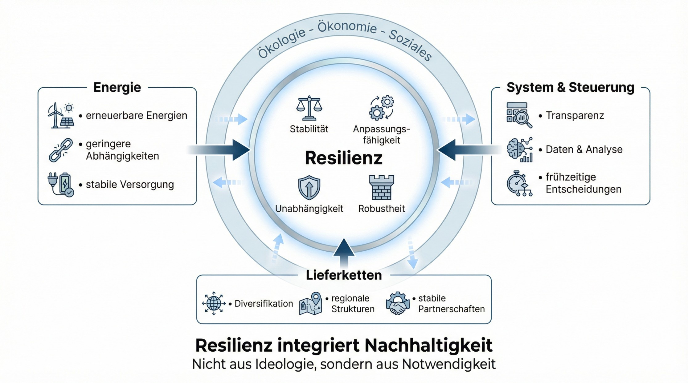
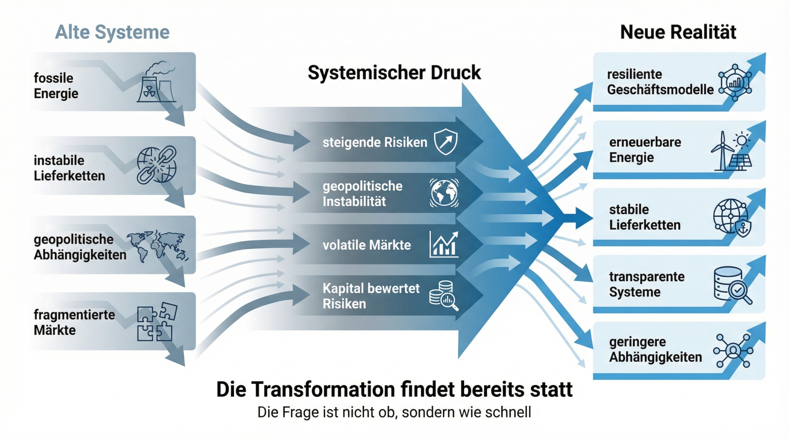

Einleitung
Wir diskutieren in Deutschland und Europa seit Jahren über Klimaschutz. Über Verbote, über Ideologie und über die Frage, wie schnell wir uns verändern dürfen.
Und gleichzeitig erleben wir gerade etwas scheinbar Gegenteiliges.
Auf EU-Ebene wird zurückgerudert. Der Green Deal wird aufgeweicht. Die CSRD wird infrage gestellt. Lieferkettenregulierungen werden abgeschwächt.
Auch international sehen wir diese Entwicklung. In den USA zieht sich Politik aus Klimaschutzverpflichtungen zurück, greift stärker in Märkte ein und setzt auf kurzfristige wirtschaftliche Interessen.
Auf den ersten Blick wirkt das wie eine klare Richtung: Weniger Transformation. Mehr Rückkehr zu alten Systemen. Doch genau hier liegt der Denkfehler.
Denn wir gehen häufig davon aus, dass politische Handlungen direkt die gewünschte Wirkung erzeugen. Tun sie aber nicht.
Handlungen erzeugen zunächst nur ein Wirkungspotenzial.
Welche Wirkung daraus tatsächlich entsteht, entscheidet das System, auf das diese Handlungen treffen.
Und dieses System hat sich grundlegend verändert.
Der Krieg in der Ukraine hat gezeigt, wie verletzlich unsere wirtschaftlichen Strukturen sind. Energiepreise sind gestiegen, Lieferketten wurden unterbrochen und selbst grundlegende Produkte waren zeitweise nicht verfügbar.
Die aktuellen Spannungen rund um den Iran zeigen, wie schnell sich geopolitische Konflikte erneut auf Energie, Transportwege und Märkte auswirken.
Zölle, Exportkontrollen und Eingriffe in technologische Systeme verstärken diese Dynamik zusätzlich.
Und all diese Effekte hängen zusammen.
Wenn Energie politisch zum Machtinstrument wird, steigen Preise. Steigende Preise wirken auf Produktion und Nachfrage. Märkte reagieren. Politische Gegenmaßnahmen folgen. Neue Unsicherheiten entstehen.
Es entstehen Rückkopplungseffekte.
Und genau dadurch passiert etwas Paradoxes.
Die politischen und geopolitischen Entwicklungen, die Transformation bremsen sollen, erzeugen genau den Druck, der sie beschleunigt.
Wenn Energie unsicher wird, werden erneuerbare Alternativen wirtschaftlich attraktiver. Wenn Lieferketten instabil werden, entstehen resilientere Strukturen. Wenn Regulierung zurückgedreht wird, steigt der Druck aus Risiko, Märkten und Kapital.
Das System reagiert. Nicht im Sinne der politischen Intention. Sondern im Sinne seiner eigenen Dynamik.
Die Transformation entsteht damit nicht primär aus politischem Willen, sondern aus systemischem Druck. Und genau das verändert gerade die Wirtschaft fundamental.
Die Realität: Systemische Risiken wirken gleichzeitig

Unternehmen stehen heute nicht mehr vor einzelnen Risiken, die sich isoliert betrachten und managen lassen. Sie bewegen sich in einem Umfeld, in dem mehrere Risikodimensionen gleichzeitig wirken und sich gegenseitig verstärken.
Dazu gehören Klimarisiken wie Dürren, Extremwetter und Ernteausfälle, geopolitische Spannungen mit Konflikten, Sanktionen und Handelsverschiebungen, zunehmende Ressourcenknappheit sowie soziale und regulatorische Veränderungen entlang globaler Wertschöpfungsketten.
Der entscheidende Unterschied zur Vergangenheit liegt jedoch nicht in der Anzahl dieser Risiken, sondern in ihrer Dynamik.
Risiken entwickeln sich nicht mehr unabhängig voneinander, sondern in Rückkopplungsschleifen.
Der Krieg in der Ukraine hat gezeigt, wie schnell sich geopolitische Ereignisse auf Energiepreise, Lieferketten und Verfügbarkeit auswirken können. Die aktuellen Entwicklungen rund um den Iran verdeutlichen zusätzlich, wie fragil globale Energiesysteme bleiben und wie stark regionale Konflikte globale Auswirkungen entfalten.
Gleichzeitig verschärfen sich wirtschaftspolitische Eingriffe.
Zölle, Exportkontrollen und regulatorische Maßnahmen greifen direkt in globale Wertschöpfungsketten ein. Sie erhöhen Kosten, verschieben Handelsströme und zwingen Unternehmen dazu, ihre Beschaffungs- und Produktionsstrukturen anzupassen.
Dabei entsteht eine Dynamik, die häufig unterschätzt wird.
Zölle betreffen nicht nur einzelne Produkte. Sie wirken entlang der gesamten Wertschöpfungskette. Vorprodukte werden teurer, Produktionskosten steigen, Margen geraten unter Druck und Preise verändern sich. Gleichzeitig reagieren andere Staaten mit eigenen Maßnahmen.
Märkte fragmentieren sich weiter.
Parallel dazu entstehen neue Risiken im technologischen Bereich.
Eingriffe in technologische Infrastruktur oder Lieferketten sind keine isolierten Ereignisse, sondern Ausdruck eines strukturellen Wandels. Wenn Technologien eingeschränkt werden, betrifft das nicht nur einzelne Komponenten, sondern gesamte digitale und industrielle Systeme.
Software, Plattformen und Datenstrukturen werden zunehmend Teil geopolitischer Auseinandersetzungen.
Technologische Abhängigkeiten werden zu strategischen Risiken.
Gleichzeitig bleiben fossile Energiemärkte inhärent instabil. Sie sind abhängig von geopolitischen Entwicklungen, politischer Einflussnahme und begrenzten Ressourcen. Preisschwankungen sind keine Ausnahme, sondern systemimmanent.
Eine nachhaltige Stabilisierung ist unter diesen Bedingungen nicht zu erwarten.
Das Ergebnis ist ein Umfeld, das nicht nur komplex, sondern dynamisch instabil ist.
Ein Konflikt erhöht Energiepreise. Steigende Energiepreise erhöhen Produktionskosten. Höhere Kosten wirken sich auf Nachfrage aus. Gesellschaftliche Spannungen nehmen zu. Politische Eingriffe folgen. Neue Unsicherheiten entstehen.
Risiken verstärken sich gegenseitig und lösen Kettenreaktionen aus.
Sie entstehen schneller. Sie breiten sich schneller aus. Sie wirken gleichzeitig auf mehreren Ebenen.
Risiken addieren sich nicht mehr, sie multiplizieren sich.
Und genau das verändert die Ausgangslage für Unternehmen fundamental.
Es geht nicht mehr darum, einzelne Risiken zu optimieren oder isoliert zu managen.
Es geht darum, ein System zu verstehen, das unter permanentem Druck steht und sich kontinuierlich verändert.
Das ist die Realität, auf die Unternehmen heute reagieren müssen.
Wirkung: Warum Nachhaltigkeit zum Risikomanagement wird

Wenn Risiken nicht mehr isoliert auftreten, sondern sich gegenseitig verstärken und beschleunigen, verändert sich die Art, wie Unternehmen Entscheidungen treffen.
Nachhaltigkeit ist dann nicht mehr primär eine Frage von Werten oder Image. Sie wird zu einer betriebswirtschaftlichen Notwendigkeit.
Denn die Risiken, die zuvor als extern oder langfristig betrachtet wurden, wirken heute direkt auf das operative Geschäft.
Energie ist nicht mehr nur ein Kostenfaktor, sondern ein geopolitisches Risiko. Lieferketten sind nicht mehr nur eine Frage der Effizienz, sondern der Stabilität. Ressourcenverfügbarkeit ist nicht mehr planbar, sondern zunehmend volatil. Technologische Abhängigkeiten sind nicht mehr neutral, sondern politisch beeinflussbar.
Unternehmen beginnen deshalb umzudenken.
Nicht, weil sie „nachhaltiger“ sein wollen, sondern weil sie ihre Geschäftsmodelle unter veränderten Bedingungen überhaupt aufrechterhalten müssen.
Genau hier entsteht der entscheidende Shift.
Nachhaltigkeit wird vom optionalen Add-on zum integralen Bestandteil von Risikomanagement, Steuerung und Strategie.
Das zeigt sich ganz konkret.
Unternehmen investieren in erneuerbare Energien, weil sie unabhängiger und planbarer sind. Sie analysieren und diversifizieren ihre Lieferketten, um Ausfälle zu vermeiden. Sie bauen Redundanzen auf, um auf Störungen reagieren zu können. Sie erfassen Daten entlang der gesamten Wertschöpfung, um Risiken frühzeitig zu erkennen und zu steuern.
Maßnahmen, die früher als „nachhaltig“ galten, entstehen heute aus rein wirtschaftlicher Logik.
Und dann kommt ein zweiter, häufig unterschätzter Hebel hinzu.
Der Finanzmarkt.
Kapital reagiert schneller und konsequenter auf Risiken als politische Systeme. Geopolitische Instabilität, volatile Energiemärkte, fragmentierte Lieferketten und technologische Abhängigkeiten werden unmittelbar bewertet.
Unternehmen, deren Geschäftsmodelle stark von instabilen Strukturen abhängen, werden als riskanter eingeschätzt.
Das hat direkte Konsequenzen.
Finanzierung wird teurer. Kredite werden restriktiver vergeben. Investoren verlangen höhere Renditen. Aktienkurse reagieren sensibel auf Unsicherheit.
Risiko wird zum Preis.
Und genau dadurch entsteht ein Selektionsmechanismus.
Unternehmen, die Risiken aktiv managen, ihre Abhängigkeiten reduzieren und ihre Systeme resilienter aufstellen, erhalten besseren Zugang zu Kapital, stabilere Finanzierungskonditionen und langfristige Wettbewerbsvorteile.
Unternehmen, die an alten Strukturen festhalten, geraten unter Druck.
Nicht durch politische Vorgaben, sondern durch Marktmechanismen.
Nachhaltigkeit wird damit nicht nur zur operativen Notwendigkeit, sondern zur Voraussetzung für wirtschaftliche Stabilität.
Sie entscheidet darüber, welche Geschäftsmodelle unter realen Bedingungen bestehen können.
Und genau dadurch verliert sie ihren ideologischen Charakter.
Nachhaltigkeit wird zur Folge von Risikobewertung im Markt.
Und genau hier entsteht das eigentliche Paradox. Die Kräfte, die diese Transformation politisch infrage stellen oder verlangsamen wollen, erhöhen durch ihre Wirkung den Druck, sie umzusetzen. Genau das beschleunigt die Entwicklung.
Das Paradox: Warum die Gegner der Transformation sie beschleunigen

Auf den ersten Blick wirkt die aktuelle Entwicklung widersprüchlich.
Geopolitische Konflikte nehmen zu. Märkte fragmentieren sich. Politische Eingriffe in Energie, Handel und Technologie häufen sich. Gleichzeitig gibt es politische Kräfte, die die Transformation verlangsamen oder infrage stellen.
Und trotzdem beschleunigt sich die Transformation.
Nicht, weil sie politisch konsequent vorangetrieben wird, sondern weil die Instabilität sie erzwingt.
Der Krieg in der Ukraine hat sichtbar gemacht, wie riskant Energieabhängigkeiten sind. Die Entwicklungen rund um den Iran verstärken diese Unsicherheit weiter und zeigen, wie schnell sich regionale Konflikte auf globale Energiemärkte auswirken.
Gleichzeitig greifen wirtschaftspolitische Maßnahmen immer stärker in globale Strukturen ein. Zölle, Exportkontrollen und technologische Restriktionen verändern die Spielregeln. Entscheidungen einzelner Staaten wirken unmittelbar auf globale Wertschöpfungsketten.
Diese Eingriffe bleiben nicht ohne Reaktion.
Andere Staaten reagieren mit eigenen Maßnahmen. Unternehmen passen ihre Strategien an. Lieferketten werden neu organisiert. Märkte fragmentieren sich weiter.
Es entsteht eine Dynamik, in der politische und wirtschaftliche Maßnahmen sich gegenseitig verstärken.
Das hat direkte Konsequenzen für Unternehmen.
Energie wird unsicherer und teurer. Lieferketten werden fragiler. Technologien werden politisch beeinflusst. Planbarkeit nimmt ab.
Unternehmen reagieren darauf nicht ideologisch, sondern ökonomisch.
Sie reduzieren Abhängigkeiten. Sie investieren in eigene und erneuerbare Energiequellen. Sie bauen redundante und diversifizierte Lieferketten auf. Sie sichern sich technologisch ab und schaffen Transparenz über ihre Wertschöpfung.
Parallel dazu verstärkt der Finanzmarkt diese Entwicklung.
Kapital bewertet Unsicherheit unmittelbar. Geschäftsmodelle, die stark von geopolitisch instabilen Regionen, fossilen Energiemärkten oder kritischen Abhängigkeiten geprägt sind, werden als riskanter eingeschätzt.
Parallel dazu verschärft sich der Druck durch Regulierung.
Banken und Finanzinstitute sind zunehmend verpflichtet, Klimarisiken systematisch in ihre Kreditvergabe und Risikobewertung zu integrieren. Aufsichtsinstitutionen wie die EBA und die Europäische Zentralbank treiben diese Entwicklung aktiv voran.
Was bedeutet das konkret?
Geschäftsmodelle werden nicht mehr nur nach klassischen Kennzahlen bewertet, sondern danach, wie anfällig sie für Klimarisiken, regulatorische Veränderungen oder geopolitische Instabilität sind.
Unternehmen, die keine Transparenz liefern oder als risikoreich gelten, werden schlechter bewertet. Das hat direkte Konsequenzen.
Finanzierung wird teurer. Kredite werden restriktiver vergeben. Kapital wird selektiver.
Gleichzeitig integriert die Zentralbank zunehmend Klimarisiken in ihre eigenen Bewertungsmechanismen. Das verändert die Attraktivität ganzer Geschäftsmodelle im Finanzsystem.
Risiko wird systematisch in Preise übersetzt. Und genau dadurch verstärkt sich die Dynamik.
Selbst wenn politische Rahmenbedingungen kurzfristig abgeschwächt werden, bleibt der Druck aus Kapital und Regulierung bestehen.
Das System reagiert weiter. Die Konsequenzen sind klar.
Finanzierung wird teurer. Investitionen werden zurückhaltender. Bewertungen reagieren sensibel auf Risiken.
Instabilität wird zum Preissignal. Und genau darin liegt das Paradox.
Die Kräfte, die bestehende Systeme stabilisieren oder Transformation bremsen wollen, erzeugen durch ihre Wirkung genau die Instabilität, die diese Systeme wirtschaftlich unattraktiv macht.
Sie beschleunigen die Transformation, die sie eigentlich verhindern wollen.
Nicht durch politische Programme. Sondern durch die Realität, die sie selbst mit erzeugen.
Und genau hier entsteht der Bruch. Während Unternehmen und Kapital längst auf diese Realität reagieren, folgt ein Teil der politischen Debatte noch alten Denkmustern.
Daraus entsteht ein Konflikt zwischen Narrativ und Realität.
Und genau hier wird der Bruch sichtbar. Während Unternehmen und Kapital bereits auf diese Realität reagieren, folgt ein Teil der politischen Debatte noch alten Denkmustern.
Daraus entsteht ein Konflikt zwischen Narrativ und Realität.
Politik vs. Realität: Warum die Wirtschaft weiter ist als die Debatte

Während Unternehmen und Kapital bereits auf die veränderte Realität reagieren, folgt ein Teil der politischen Debatte weiterhin einer linearen Logik.
Dort wird argumentiert, dass die Transformation zu schnell sei, dass Klimaschutz wirtschaftliche Belastungen verursache oder dass bestehende Systeme geschützt werden müssten.
Diese Perspektive wirkt auf den ersten Blick nachvollziehbar. Sie übersieht jedoch einen entscheidenden Punkt. Die wirtschaftliche Realität hat sich bereits verändert.
Unternehmen stehen nicht mehr vor der Entscheidung, ob sie sich transformieren wollen. Sie stehen vor der Notwendigkeit, mit einer zunehmenden Instabilität umzugehen, die direkt auf ihre Geschäftsmodelle wirkt.
Geopolitische Konflikte nehmen zu. Energiemärkte bleiben volatil. Lieferketten werden unsicherer. Technologische Abhängigkeiten werden politisch beeinflusst. Handelsströme verändern sich durch Zölle und regulatorische Eingriffe.
Diese Entwicklungen sind keine hypothetischen Szenarien. Sie bestimmen bereits heute die wirtschaftliche Realität.
Und genau deshalb entsteht aktuell eine Spannung zwischen politischer Logik und ökonomischer Realität.
Teile der Politik versuchen, Tempo herauszunehmen oder bestehende Systeme zu stabilisieren. Gleichzeitig fordern Unternehmen genau das Gegenteil, nämlich Planungssicherheit, verlässliche Rahmenbedingungen und einen klaren, langfristigen Kurs.
Denn Unsicherheit ist selbst ein wirtschaftlicher Risikofaktor. Wenn energiepolitische Entscheidungen nicht klar sind, wenn regulatorische Rahmenbedingungen infrage gestellt werden oder sich kurzfristig verändern, steigen Kosten, Investitionen werden zurückgestellt und strategische Entscheidungen werden schwieriger.
Das führt zu einem paradoxen Effekt. Politische Versuche, kurzfristig zu entlasten oder bestehende Strukturen zu schützen, können langfristig genau das Gegenteil bewirken.
Sie erhöhen Unsicherheit und damit wirtschaftlichen Druck.
Und dieser Druck wird nicht nur von Unternehmen wahrgenommen, sondern unmittelbar vom Finanzmarkt bewertet.
Kapital reagiert sensibel auf Unsicherheit. Wenn politische Rahmenbedingungen instabil sind, steigen Risikoprämien, Finanzierung wird teurer und Investitionen werden vorsichtiger.
Politik kann Transformation verlangsamen, aber sie kann die ökonomischen Konsequenzen nicht aufhalten.
Unternehmen müssen handeln, unabhängig von politischen Narrativen.
Und genau deshalb sehen wir aktuell, dass wirtschaftliche Entscheidungen häufig schneller und konsequenter sind als politische Prozesse.
Die Wirtschaft folgt der Realität. Die Politik folgt häufig noch der Debatte. Und genau daraus ergibt sich die entscheidende Frage.
Wenn weder politische Ideologie noch kurzfristige Interessen den Ausschlag geben, was ist dann der eigentliche Hebel für erfolgreiche Transformation?
Die Antwort liegt im Timing.
Der entscheidende Hebel: Timing

Der größte Fehler in der aktuellen Debatte ist nicht falsches Handeln. Der größte Fehler ist zu spätes Handeln.
Denn in einem stabilen System konnte man Entscheidungen aufschieben, Optionen offenhalten und Entwicklungen beobachten. In einem Umfeld, das zunehmend von geopolitischer Instabilität, fragmentierten Märkten und volatilen Energie- und Rohstoffpreisen geprägt ist, funktioniert das nicht mehr.
Timing wird zum entscheidenden Wettbewerbsfaktor.
Frühes Handeln bedeutet, dass Unternehmen noch gestalten können. Sie können ihre Energieversorgung aktiv umstellen, ihre Abhängigkeiten reduzieren, Lieferketten strategisch diversifizieren und technologische Risiken frühzeitig adressieren.
Optionen sind verfügbar. Kosten sind kalkulierbar. Entscheidungen können strategisch getroffen werden.
Spätes Handeln bedeutet das Gegenteil.
Optionen sind eingeschränkt oder nicht mehr vorhanden. Preise sind bereits gestiegen. Abhängigkeiten haben sich verfestigt. Technologische Alternativen sind schwerer verfügbar. Entscheidungen werden nicht mehr strategisch getroffen, sondern unter Druck.
Das System zwingt dann zu Reaktionen, nicht zu Gestaltung. Und genau diese Dynamik verstärkt sich aktuell.
Geopolitische Konflikte entstehen schneller und wirken unmittelbarer auf wirtschaftliche Prozesse. Politische Eingriffe wie Zölle, Exportkontrollen oder technologische Restriktionen verändern Rahmenbedingungen kurzfristig. Energiemärkte reagieren sensibel auf regionale Spannungen.
Der Handlungsspielraum schrumpft mit der Zeit.
Das hat direkte ökonomische Konsequenzen.
Unternehmen, die früh handeln, sichern sich Vorteile. Sie stabilisieren ihre Kostenstrukturen, reduzieren Risiken, sichern sich besseren Zugang zu Kapital und erhöhen ihre strategische Flexibilität.
Unternehmen, die abwarten, zahlen höhere Preise, verlieren Handlungsspielraum und geraten zunehmend unter Druck.
Timing entscheidet damit nicht nur über Effizienz, sondern über Stabilität und Wettbewerbsfähigkeit.
Und genau hier liegt die Verbindung zur gesamten Transformation.
Es geht nicht mehr darum, ob Transformation stattfindet.
Es geht darum, ob sie proaktiv gestaltet oder reaktiv erlitten wird.
Frühes Handeln bedeutet Kontrolle über die eigene Entwicklung.
Spätes Handeln bedeutet Anpassung unter Zwang.
Und genau daraus ergibt sich die nächste Konsequenz.
Wenn Timing entscheidend ist, braucht es eine Grundlage, auf der überhaupt frühzeitig gehandelt werden kann.
Diese Grundlage ist Transparenz.
Transparenz: Warum Daten zur Steuerungsgrundlage werden

Wenn Timing über Erfolg oder Misserfolg entscheidet, stellt sich eine zentrale Frage.
Wie kann ein Unternehmen überhaupt früh handeln, wenn es Risiken nicht erkennt?
Genau hier wird Transparenz zur entscheidenden Voraussetzung.
Denn in einem vernetzten und zunehmend instabilen System entstehen Risiken selten dort, wo sie sichtbar werden. Sie entstehen entlang von Lieferketten, in Energieabhängigkeiten, in technologischen Strukturen, in regulatorischen Entwicklungen und durch geopolitische Ereignisse, die sich unmittelbar auf wirtschaftliche Prozesse auswirken.
Ohne Transparenz bleiben diese Risiken unsichtbar, bis sie im eigenen Unternehmen ankommen.
Und dann ist es zu spät.
Deshalb verändert sich aktuell die Rolle von Daten fundamental.
Was früher als Reporting oder regulatorische Pflicht wahrgenommen wurde, wird heute zur Grundlage für Steuerung.
CSRD, ESG-Daten oder Lieferkettentransparenz werden häufig als Bürokratie kritisiert. In Wirklichkeit bilden sie genau das ab, was Unternehmen benötigen, um in einem instabilen Umfeld handlungsfähig zu bleiben.
Sie machen sichtbar, wo Risiken entstehen, wie sie sich entlang der Wertschöpfung ausbreiten und welche Auswirkungen sie auf Kosten, Verfügbarkeit und Stabilität haben.
Gerade vor dem Hintergrund geopolitischer Entwicklungen wird das besonders deutlich.
Wenn Energiepreise durch Konflikte beeinflusst werden, wenn Lieferketten durch politische Eingriffe unterbrochen werden oder wenn technologische Systeme eingeschränkt werden, dann reicht es nicht, nur auf das eigene Unternehmen zu schauen.
Unternehmen müssen ihr gesamtes System verstehen.
Transparenz bedeutet deshalb mehr als Datensammlung.
Sie bedeutet, Zusammenhänge zu erkennen, Abhängigkeiten sichtbar zu machen und Wirkungen zu verstehen.
Erst auf dieser Basis wird Steuerung möglich.
Unternehmen können Szenarien entwickeln, Risiken frühzeitig identifizieren, Alternativen bewerten und Entscheidungen treffen, bevor sich Probleme materialisieren. Transparenz verschiebt den Zeitpunkt der Entscheidung nach vorne. Und genau das ist in einem instabilen System entscheidend.
Denn wer früher sieht, kann früher handeln. Und wer früher handelt, hat mehr Optionen.
Damit wird Transparenz zum zentralen Hebel für Resilienz.
Sie verbindet Risikoerkennung, Entscheidungsfähigkeit und strategische Steuerung.
Und genau hier liegt der nächste Schritt. Wenn Transparenz Steuerung ermöglicht und Steuerung Stabilität schafft, dann wird deutlich, worum es im Kern geht.
Resilienz.
Resilienz: Warum sie die praktischste Form von Nachhaltigkeit ist

Wenn Risiken systemisch wirken, sich gegenseitig verstärken und durch geopolitische sowie wirtschaftliche Dynamiken beschleunigt werden, dann verändert sich die Zielgröße wirtschaftlichen Handelns.
Es geht nicht mehr primär um Effizienz im klassischen Sinne.
Es geht um Resilienz.
Resilienz bedeutet in diesem Kontext, dass Unternehmen in der Lage sind, mit Unsicherheit umzugehen, externe Schocks zu absorbieren und sich schnell an veränderte Rahmenbedingungen anzupassen.
Das betrifft zentrale Bereiche der Wertschöpfung.
Energieversorgung muss stabil und planbar sein. Lieferketten müssen robust und diversifiziert sein. Technologische Systeme müssen unabhängig und verfügbar bleiben. Entscheidungen müssen auf belastbaren Informationen basieren.
Und genau hier zeigt sich ein entscheidender Zusammenhang.
Resilienz ist die praktischste Form von Nachhaltigkeit.
Warum?
Weil sie automatisch genau die Faktoren adressiert, die im Zentrum der aktuellen Krisen stehen.
Unternehmen, die ihre Energieversorgung stabilisieren, investieren in erneuerbare Energien und reduzieren geopolitische Abhängigkeiten. Unternehmen, die ihre Lieferketten resilient gestalten, achten auf Diversifikation, regionale Strukturen und stabile Partnerschaften. Unternehmen, die Transparenz schaffen, berücksichtigen Umweltfaktoren, regulatorische Entwicklungen und gesellschaftliche Auswirkungen.
Resilienz integriert damit ökologische, ökonomische und soziale Aspekte, nicht aus normativen Gründen, sondern aus funktionaler Notwendigkeit.
Sie entsteht nicht, weil Unternehmen nachhaltiger sein wollen.
Sie entsteht, weil Unternehmen unter realen Bedingungen funktionieren müssen.
Das macht sie so wirkungsvoll.
Denn im Gegensatz zu rein normativen Nachhaltigkeitsansätzen erzeugt Resilienz unmittelbare wirtschaftliche Vorteile.
Stabilere Kostenstrukturen, geringere Risiken, bessere Planbarkeit und verlässlicher Zugang zu Kapital sind direkte Ergebnisse resilienter Systeme.
Und genau deshalb setzt sich Resilienz durch. Nicht als moralisches Ziel, sondern als ökonomische Logik. Damit verschiebt sich die gesamte Perspektive.
Es geht nicht mehr darum, ob Nachhaltigkeit sinnvoll ist.
Es geht darum, ob ein Geschäftsmodell unter realen Bedingungen überhaupt noch tragfähig ist.
Und genau daraus ergibt sich die eigentliche Konsequenz.
Wenn Resilienz zur Voraussetzung für wirtschaftlichen Erfolg wird, dann ist die Transformation nicht mehr aufzuhalten.
Sie passiert unabhängig von politischen Narrativen.
Die unbequeme Wahrheit: Die Transformation ist längst entschieden

Wenn Risiken systemisch wirken, sich gegenseitig verstärken und durch geopolitische Entwicklungen weiter beschleunigt werden, wenn Kapital diese Risiken unmittelbar bewertet und wenn Unternehmen gezwungen sind, ihre Systeme stabiler aufzustellen, dann ergibt sich eine Konsequenz, die in der politischen Debatte häufig ausgeblendet wird.
Die Transformation ist keine offene Frage mehr.
Sie findet bereits statt.
Nicht, weil sie politisch durchgesetzt wurde, sondern weil sie ökonomisch notwendig ist.
Unternehmen reagieren auf Instabilität. Kapital reagiert auf Risiko. Märkte reagieren auf Unsicherheit. Und genau deshalb verschiebt sich der Maßstab.
Es geht nicht mehr darum, ob wir uns verändern wollen.
Es geht darum, ob wir schnell genug sind.
Die eigentliche Gefahr liegt nicht in der Transformation. Sie liegt im Festhalten an Strukturen, die unter realen Bedingungen nicht mehr funktionieren.
Geopolitische Konflikte werden nicht weniger. Energiemärkte bleiben volatil. Technologische Systeme werden politischer. Globale Wertschöpfung fragmentiert sich weiter.
Diese Entwicklungen sind keine Ausnahmen. Sie sind Ausdruck eines Systems im Wandel.
Und genau deshalb wird die Transformation weiter an Geschwindigkeit gewinnen.
Nicht durch politische Programme, sondern durch die Wirkungen, die dieses System erzeugt.
Putin, die Entwicklungen im Iran, geopolitische Spannungen und politische Eingriffe in Märkte und Technologien wirken auf den ersten Blick wie Bremsklötze der Transformation.
In der Realität bewirken sie das Gegenteil. Sie beschleunigen sie.
Nicht aus Überzeugung. Sondern durch Wirkung.
Nicht die Ideologie entscheidet über die Zukunft der Wirtschaft.
Sondern die Fähigkeit, mit Wirkung umzugehen.